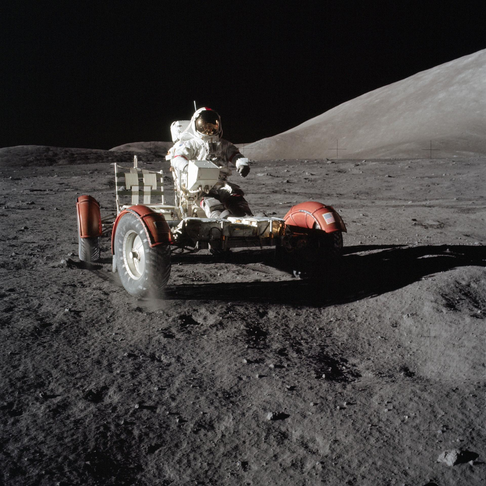
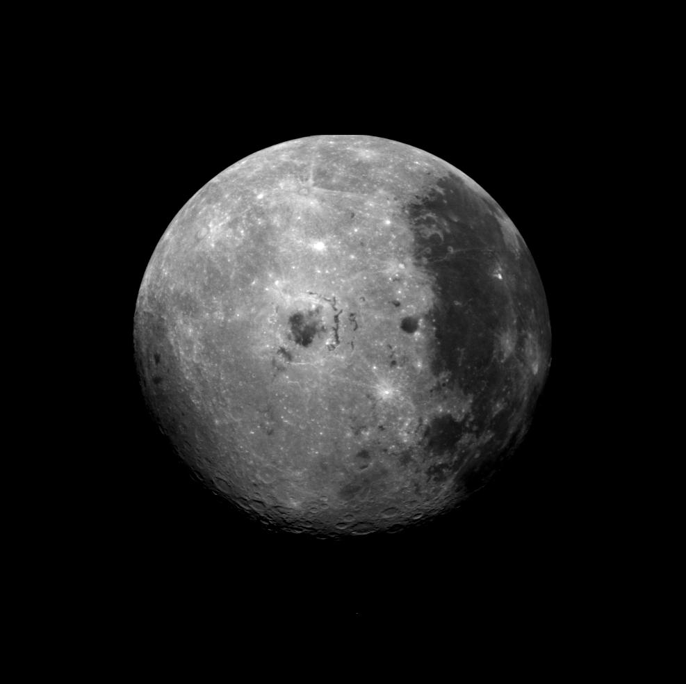
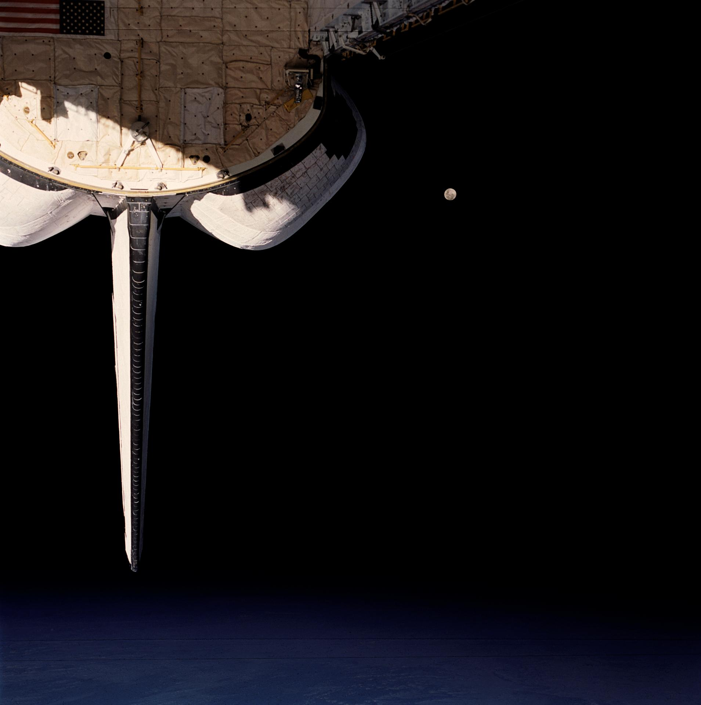
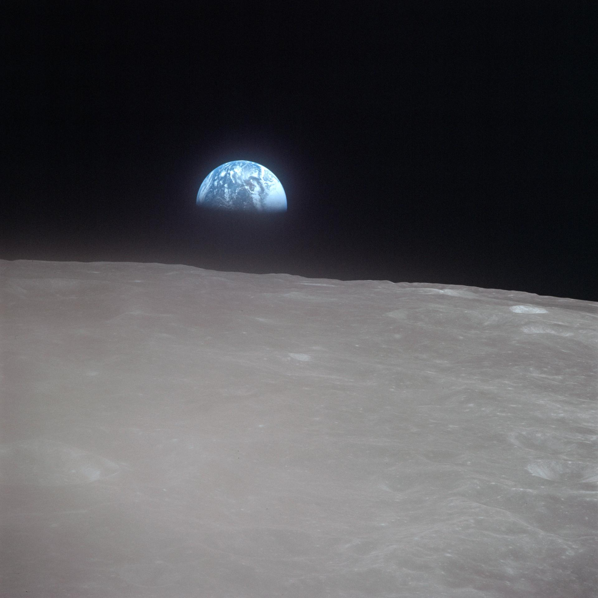

Coding

OpenAI / 2026-04-23
GPT5.5
Capability
Dossier 01
Execution
System
Coding / Tools
Complex Work
01
GPT 5.5 briefing
This deck analyzes GPT 5.5's real shift: not just better answers, but stronger execution across coding, tool use, and complex task progress with less human process management.
Execution
System
From answer model to execution system

Core Shift
Previous models behaved more like high-quality function calls: you decomposed tasks, controlled steps, and checked results. GPT 5.5 more often understands the goal earlier, plans, uses tools, checks, and continues.
Value
The value is not only single-answer quality. It is fewer handoffs, fewer clarification loops, and less mid-task drift.
continuous action leads

GPT 5.5's clearest lead appears in tasks that require persistent action: holding intent, choosing tools, recovering from failures, and checking the result as one chain.
82.7%Terminal-Bench 2.0
84.9%GDPval wins/ties
81.8%CyberGym

Coding
from completion to agentic repair
Better suited to cross-file understanding, command-line loops, and continuing after failure. The Terminal-Bench jump points to stronger action quality in real development environments.
Computer Use
moving between software surfaces
The point is not merely clicking. It is maintaining goal coherence across pages, documents, spreadsheets, and tool calls so humans do less process management.
Capability map
four zones define the practical boundary

Tools
tool-heavy workflows
Knowledge
turn fuzzy input into artifacts
Prompting
outcomes over step obedience
Plan
understand goals
and constraints
Act
move tasks
across tools
Verify
check results
and converge
Model indicators
The cost is total task completion
Terminal-Bench 2.0
82.7%
GDPval wins/ties
84.9%
CyberGym
81.8%
BrowseComp
84.4%
Model routing
model choice becomes operations
Use evals for routing instead of making the strongest model the default. The hidden bill is retries, human takeover, tool misuse, and context drift.
Safety / control
as capability looks like operation, governance becomes systems engineering
The more capable the tool use, the more the system needs clear tool descriptions, parameter limits, evidence rules, confirmation points, and audit logs.
01
pre-deployment safety evaluation
02
runtime permission narrowing
03
evidence rules and audit logs
04
human confirmation for high-risk actions
Adoption playbook
start with high-friction verifiable work
Code repair, data cleanup, research, document generation, and complex support tickets.
GPT 5.5
Not a bigger chat box, but a smaller management burden.
GPT 5.5 analysis / 01
Workflow completion